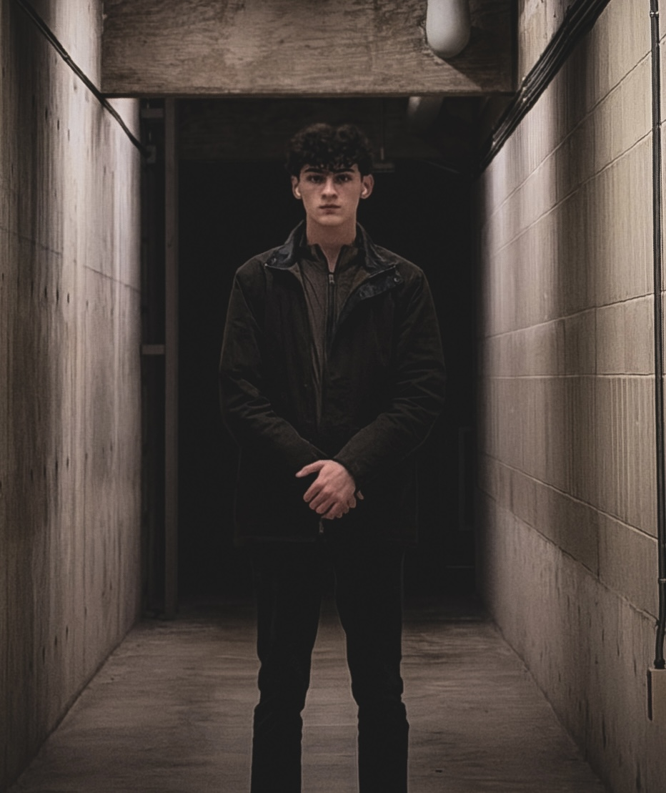

About

I am passionate about creating a space for freedom of expression through photography. Based in Exeter, New Hampshire, this website began as a way to share my own work in a clean, intentional, and professional space.
Over time, I hope this site grows into more than just a home for my photography. My goal is for Nico’s Photography to become a platform where others can also share their perspectives, creativity, and visual stories.
I was born in New York City, above my parents’ restaurant, Corner Social. In 2026, I created this site with the simple idea that photography deserves a space that feels thoughtful, calm, and honest.